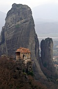
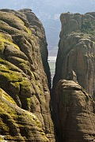

Disclaimer: These pages are not actively maintained, and some of the practical information on the site is out of date. I am working on a new version of the site that will focus more on my photos and memories of travel in Southeast Europe, and less on practical details that too easily become obsolete. In the meantime, please treat the information here with caution.
Holy Trinity

Great Meteora
Meteora
Orthodox monks throughout the Balkan region have historically chosen isolated and beautiful landscapes in which to carry out their devotions in peace and safety. Few of these locations are quite so beautiful or isolated as Meteora. Perched on top of towers of sheer dark rock, the monasteries seem already to be half way to another world. The unusual landscape on its own would be reason enough for a visit; the combinaton of natural and cultural attractions makes Meteora one of the biggest draws in mainland Greece.
Impressive as the monastic community is today, it was once much larger. As well as six working monasteries and convents, all open to the public, there are dozens of others in various states of ruin; a couple appear to be at a fairly advanced stage of restoration. Although the six main monasteries are all located at the summits of rock towers, some of the others were built into cliff walls. The challenges of the terrain meant that each establishment had to diverge from the standard monastic ground plan in its own unique way. As a result each structure has its own personality, helping to dispel the feeling of "monastery fatigue" that might otherwise result from visiting too many religious institutions in a short space of time.
Church of the Dormition, Kalambaka

Rousanou
The towns of Kalambaka and Kastraki, nestled at the base of some of the highest rock pinnacles, don't have much in the way of sights, with the exception of Kalambaka's Church of the Dormition (Assumption) of the Virgin. They do makes good bases to visit the monasteries and to enjoy the changing effects of light and weather on the rock facades.
Four of the working monasteries are located quite close together to the north of Kastraki. The first one you come to is Moni Agiou Nikolaou Anapafsa, which is well known for its frescoes. If you follow the paved road the next monastery is Moni Agias Varvaras Rousanou. See from below it has perhaps the most gravity-defying appearance of all, appearing to be far too large for the rock on which it is built. High above it are Moni Varlaam and Moni Megalou Meteorou (the Great Meteora, also known as the Transfiguration). The latter was historically the most powerful and wealthiest of the monasteries and thus has the most to see, as well as the smuggest-looking monastery cats.
There are two more monasteries further to the east, closer to Kalambaka. Moni Agias Triados (Holy Trinity) has a rather austere feel. Moni Agiou Stefanou has a homelier feel, and is beautifully maintained by the nuns who live there. The road between Varlaam and Holy Trinity has some of the best panoramas of the area, notably the Psaropetra viewpoint, from which five of the monasteries are visible.
The ideal way to experience Meteora's unique conjunction of natural and man-made beauty is by walking. In the words of the author of a local guide (see below), "The slow pace of the walker makes it possible to experience what is happening around one, giving new dimensions to a flower, a rock, or a monk standing high up on a balcony. Only by treading the same paths worn by the feet of holy men since as far back as the eleventh century, well away from the milling crowds of tourists, will you be able to see this other aspect of Meteora". The sheer walls of rock look intimidating, but in fact the walking around here is not difficult (at least as long as you don't visit in the heat of high summer). For example, it is only an hour's walk on a good path from Kalambaka to Holy Trinity.
Walking is the only way to see some of the most impressive rock formations in the area just east of Kastraki. There are no working monasteries in this area, but there are quite a few ruins. It's worth making the climb to Agio Pneuma (Holy Spirit), where a little whitewashed chapel has been cut into the rock. From a bell improbably located on an otherwise bare expanse of rock you can look directly down on Kastraki. It's also possible to escape from the crowds by heading north from the Transfiguration to Ypapanti, a good example of a monastery built into the side of a rock tower rather than on top of it.

Landscapes of Meteora
Practicalities
It's possible to see all the monasteries in a long day of sightseeing. A second day allows a more relaxed pace and the opportunity to see more of the surrounding landscape, especially if you will be exploring on foot. Typically the monasteries are open from 9am to 5pm, with a break of an hour or two for lunch. All are open on Saturday and Sunday, but some close on certain weekdays or afternoons - another reason why a two-day visit may be a good idea. These opening hours change from year to year, so beware of relying on information in guidebooks.
Kalambaka is fairly easy to reach by train or bus. There are a couple of convenient direct trains from Athens, as well as several more trains connecting to the main Athens-Thessaloniki line at Palaiopharsala (a station with even more spelling variations than most Greek place names). Buses go to Athens and various other places, including Metsovo and Ioannina on the other side of the Pindus range. There are frequent local buses to Kastraki and to Trikala, a larger town half an hour away with a wider range of bus connections.
There are quite a few hotels and private rooms in both Kalambaka and Kastraki. Both towns make good bases for visiting the monasteries; Kastraki is the smaller and quieter town - not that Kalambaka is a bustling metropolis - and is slightly closer to the main group of monasteries. According to guidebooks there are two buses a day from Kastraki to the main monasteries, at least in summer. Taxi drivers in Kalambaka also offer tours of the monasteries. Many people visit the monasteries on guided tours, often from Athens. This option means you won't have to worry about practical details, but at a cost: the monastery churches are rather small and not seen to best effect with a group of fifty people.
The Footpaths of Meteora by Antonis Kalorgirou is available from a newsagent in the centre of Kalambaka. It includes detailed descriptions of five walks taking in all the monasteries open to the public, several ruined monasteries, and many sites of natural interest. The walks mostly avoid the asphalt road and the huge tour buses that lumber along it, forcing pedestrians to take refuge in the undergrowth. This guide is highly recommended for anyone planning to walk between the monasteries - the maps in general-purpose guidebooks are not ideal for this purpose. Most of the footpaths (monopati) are not marked. This seems to be something of a missed opportunity for the local tourist trade - a network of properly marked and maintained trails might encourage visitors to stay longer than the typical one or two nights. For the moment walkers are left to their own devices - fortunately the monasteries are visible across long distances so getting seriously lost is unlikely. If you visit in high summer, bear in mind that there is not much shelter from the sun amongst these bare rocks.
More photos of Meteora in my Greece Galleries